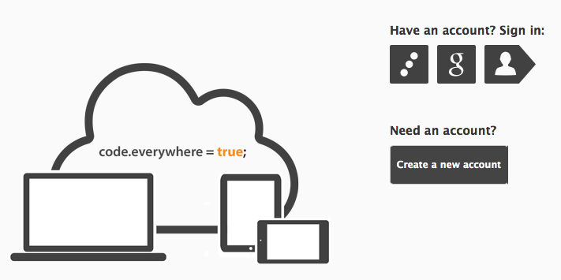

You are directed to the Login page whenever you attempt to access an Orion service that requires authentication or you have landed at Orion's main page. You have three methods of logging in. If you want to login using your Orion account press the Orion login button, and enter your credentials. If you have already associated your account with a GoogleID then you can choose the GoogleID login button. If you have a Mozilla Persona login which matches the email in your Orion account then you can login with Persona using the associated button.
Depending on how the Orion server is configured, there may also be an option to create a new account directly from the Login page. After a successful login, you will be redirected back to the page that prompted you to login in the first place or you will be directed to the Navigator.
To authorize using a GoogleID or Persona account, you have to first register that account with your Orion account from the Orion Profile page.
If you ever forget your password, you can click Forgot your password? to request a password reset. To be able to reset your password, you must have previously supplied an email address from the Profile page.
Here is a complete view of the Login page:

This document is maintained in a collaborative wiki. If you wish to update or modify this document please visit http://wiki.eclipse.org/Orion/Documentation/User_Guide/Reference/Login_page